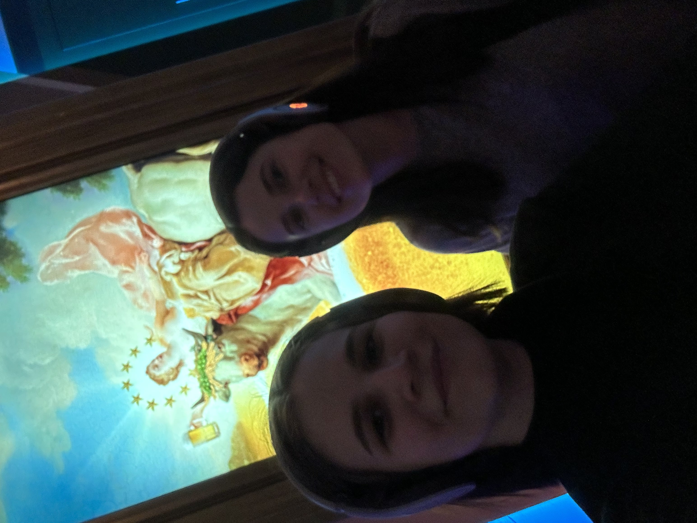
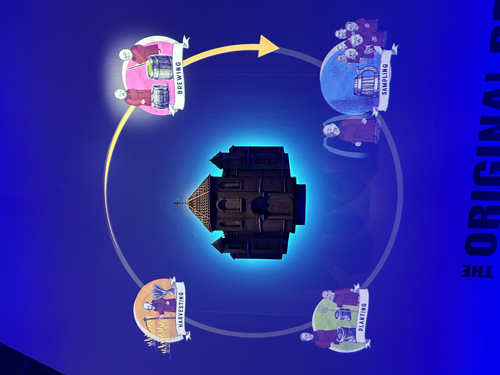
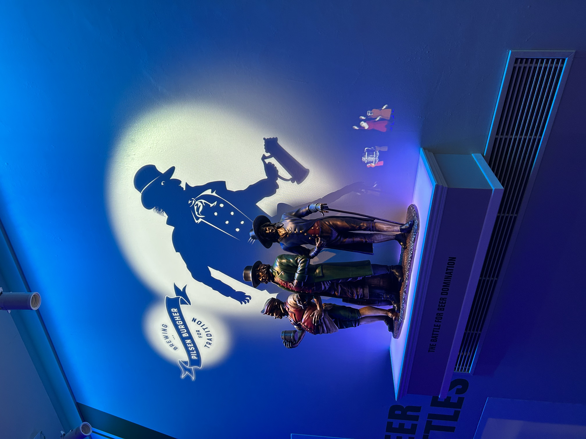
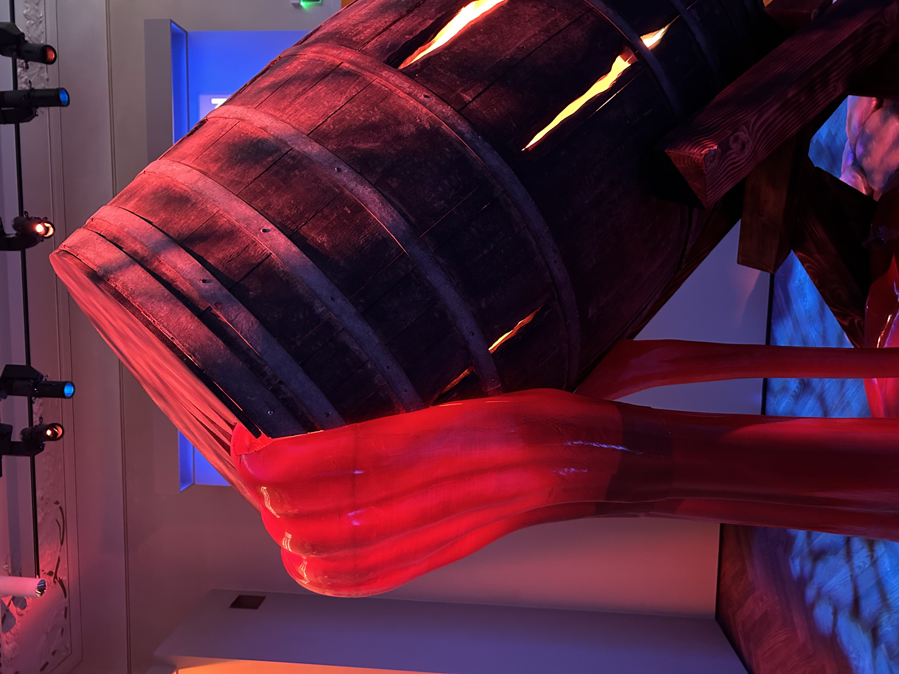
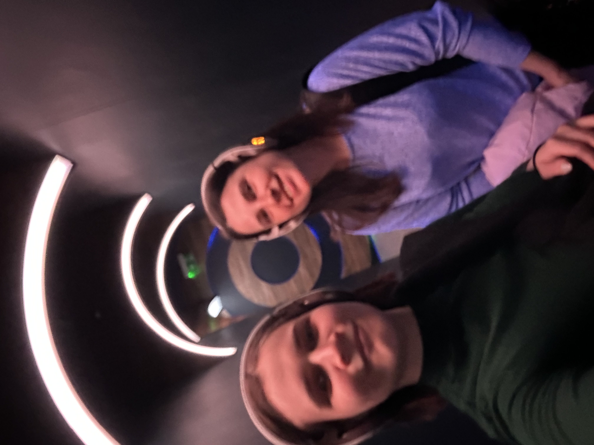
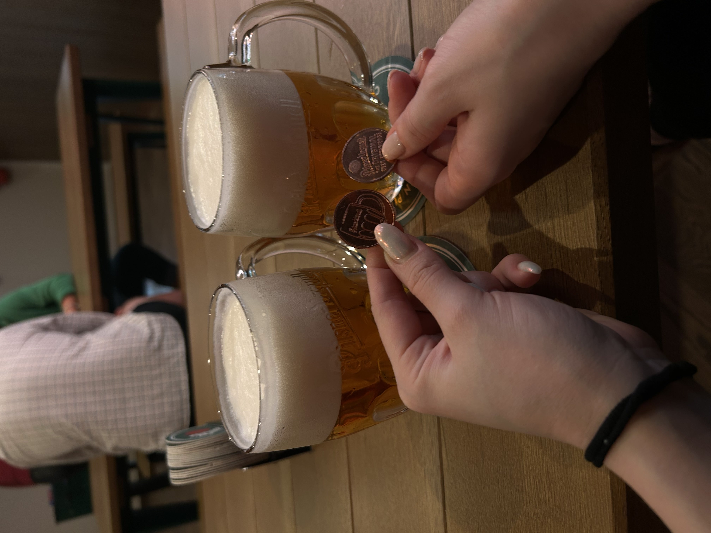

The short story about the famous beer in the Czech republic
Pisner Urquell
Pilsner Urquell was the first pale lager,
and the name pilsner is often used by its copies.
It is characterised by its golden colour and clarity,
and was immensely successful: nine out of ten beers produced
and consumed in the world are pale lagers based on
Pilsner Urquell.
*The German name, which means 'original source',
was adopted as a trademark in 1898.

Actually if you want to know more about this beer and also taste it, here is the solution:
you can visit the museum of Pilsner Urquell in the Prague center
ABOUT MUSEUM
- It is on Wenceslas square
- It includes a beer degustation
- It will show you the whole history of this beer
- It has an amazing sound guide in headphones
Here are some photos from inside!






The actual degustation and a history narration looks like here:
you will listen to guide in english or czech languages,
you will recieve small portion of origin beer
believe me, it tastes much better than one in pub!

There is also an interactive game!

You will recieve two coins and you can change them for beer,
I chenged 1 coin and 1 I saved as a souvenir
see photo before in gallery
The adress: 28. října 377/13 Prague
The original site